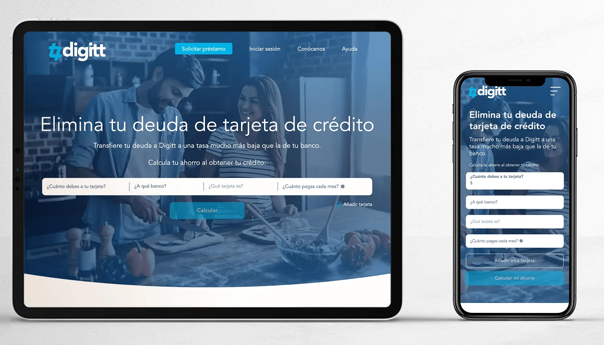
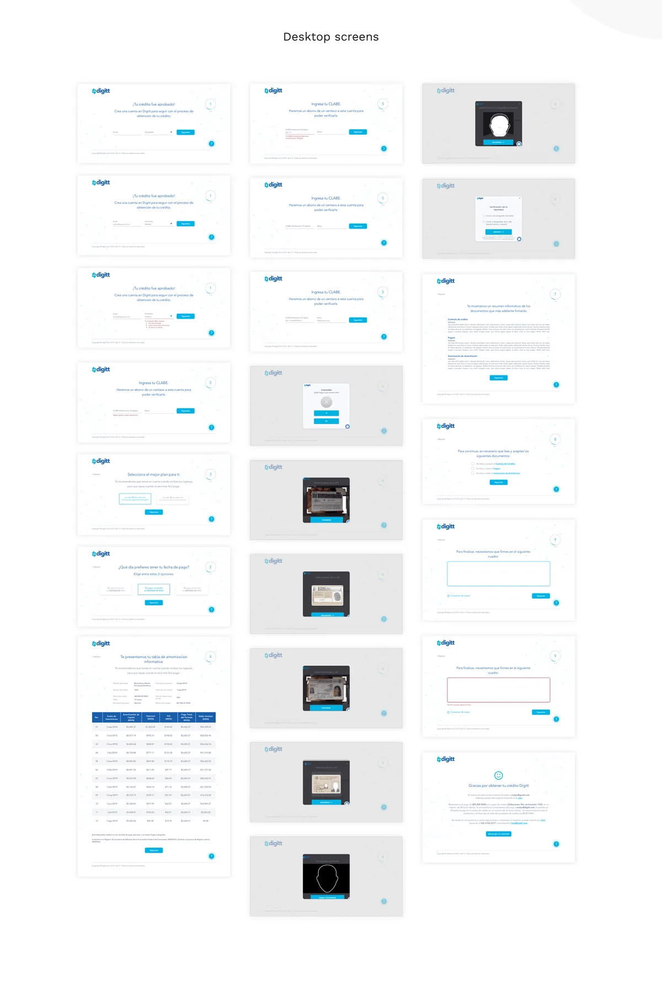
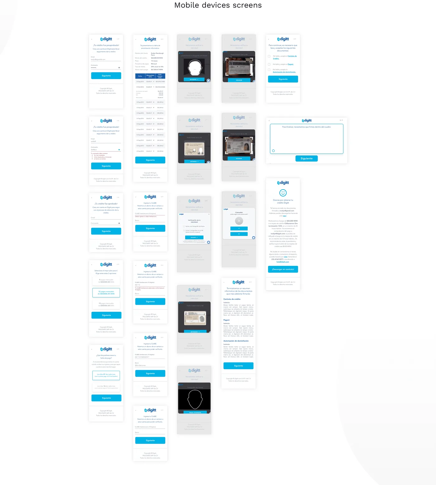
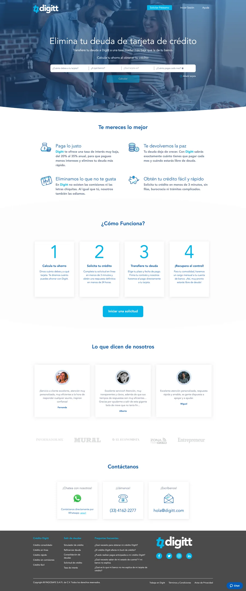

Digitt — Designing Trust-Critical Flows for a Debt-Reduction Platform
Digitt is a fintech platform that helps users reduce credit card debt by refinancing to a lower interest rate.
{kind=link}

Starting in 2018, I designed the core user flows — from initial application through document review and digital signature —
with a focus on keeping users confident through a financially and legally consequential process.
The Problem — Business and User
Business problem: In fintech lending, the application funnel is a direct revenue driver. Every drop-off between eligibility check and signed agreement is a lost conversion. For Digitt in 2018 — an early-stage product scaling its digital processes — drop-off in multi-step forms and the signature flow represented the primary obstacle to growth. The design problem was not awareness or acquisition. It was completion.
User problem: Debt refinancing is emotionally loaded. Users arrive already stressed about their financial situation, and then face a process that asks for sensitive personal and financial data, requires reading legal documents, and ends with a legally binding signature — often on a device they're not fully comfortable with. The dominant user anxiety is: "Am I agreeing to something I don't understand?" Drop-off is rarely caused by users giving up — it's caused by users pausing and never coming back.
Connection to product goals: Reducing form drop-off and signature abandonment directly mapped to Digitt's ability to demonstrate conversion metrics to investors and scale its lending volume. Every improvement to user comprehension and confidence was simultaneously a product quality improvement and a business metric driver.
Role & Ownership
I was the UX/UI designer responsible for flows, screens, and handoff. I did not own Digitt's brand, design system, or long-term visual identity. The table below is explicit about what I owned vs. what was team or product work:
| Area | Who | Notes |
|---|---|---|
| User flows & IA Me | Solo | End-to-end flow mapping, step sequencing, screen-by-screen IA |
| Wireframes & prototypes Me | Solo | Low-fi through interactive prototypes for stakeholder validation |
| Form UX & validation states Me | Solo | Field grouping, progressive disclosure, inline error patterns |
| Digital signature flow Me | Solo | Full flow design — document review, consent patterns, completion states |
| Accessibility advocacy Me | Solo | Raised WCAG compliance issues throughout; some implemented post-engagement |
| Brand & visual identity Not mine | Digitt team | Color, typography, and component styling owned by the product team |
| Engineering implementation Shared | With Dev team | I provided specs + edge cases; implementation decisions with engineering |
Process
The engagement was structured around the highest-friction moments in the funnel: the multi-step application form and the digital signature flow. Rather than redesigning the full product, I focused on the steps where user confusion or anxiety was most likely to cause abandonment — and designed specifically to reduce those moments.
- Discovery: reviewed market benchmarks for debt consolidation flows, audited stakeholder feedback on drop-off points, and aligned on a "trust checklist" — the three questions every screen must answer: What is this? Why do you need it? What happens next?
- Flow mapping: mapped the end-to-end journey as a sequence of user decisions, not just screens — identifying where back-tracking was likely, where cognitive load peaked, and where errors would be most costly.
- Wireframes + prototyping: low-fi wireframes for structure validation, followed by interactive prototypes for stakeholder review — allowing the experience to be assessed as a journey, not a collection of static screens.
- Implementation support: worked with engineering to clarify edge cases, error states, and interaction details — with two rounds of QA to catch implementation drift.
Key Design Decisions & Tradeoffs
The initial approach grouped all financial information into a single long-form screen — common in legacy financial applications, and preferred by the development team for implementation simplicity. I redesigned as a progressive multi-step flow, revealing one logical group of questions at a time. The tradeoff: more screens, more implementation complexity. The argument for it: in sensitive financial contexts, users who can see the full scope of what they're being asked feel overwhelmed and defer. Breaking it into named steps (Your information → Your finances → Review → Sign) gave users a legible scope and a sense of progress that reduced premature abandonment. Each step was small enough to complete in under 2 minutes.
The original signature flow presented the document and the signature input simultaneously — the legal content scrolling alongside the signature field. I separated them into two distinct screens: Review and Sign. The argument against this: it added a screen and a click. The argument for it: presenting a signature input while legal text is still on screen creates the visual impression that signing is the primary task, not understanding. Separating the steps made review genuinely prior to consent — which is both better UX and more legally defensible. The signature step, when it arrived, felt like a deliberate act rather than a continuation of scrolling.
I designed errors to surface inline — immediately on field blur — rather than collected at the bottom of the form or after submission. This was debated: end-of-form summaries are common in financial applications because they require less real-time backend logic. Inline validation requires more engineering effort. I advocated for inline because in financial forms, users make mistakes on sensitive fields (SSN, account numbers) and discovering this only at submission creates a negative experience at exactly the moment trust is most critical. Inline errors also support screen reader users who navigate field-by-field — a WCAG requirement that end-of-form patterns make significantly harder to satisfy.
{kind=link}

The Signature Flow — Designing for Explicit Consent
The digital signature step is simultaneously a legal requirement, a trust moment, and a completion signal. Getting it wrong doesn't just cause abandonment — it creates legal exposure. I designed the flow around one principle: the user's action must feel deliberate, not automatic.
- Separated review from signing: the document appears in a dedicated review screen with scroll tracking — users can't proceed until they've reached the bottom, creating a genuine review gate rather than a checkbox formality.
- Named what they're agreeing to: every confirmation step includes the document title and a plain-language summary of what's being agreed to — not just "Sign below."
- Progress context preserved: the signature step shows users where they are in the overall flow — so completing the signature feels like finishing a process, not entering a new one.
- Confirmation state designed as a celebration, not a receipt: the post-signature screen was designed to feel like an achievement — because for users managing debt, completing this step is genuinely significant.
{kind=link}

Accessibility
Financial platforms have a legal obligation to accessibility — not just a UX one. Across the engagement, I flagged and advocated for several WCAG 2.1 AA requirements:
- Button contrast failures: primary CTAs used a brand color that failed the 4.5:1 contrast ratio for normal text and 3:1 for large text. I raised this formally and it was addressed in a later update — the improved contrast is now live.
- Inline validation and screen reader support: error messages needed ARIA live regions to be announced to screen reader users — a common oversight in financial forms that makes them functionally unusable for visually impaired users.
- Focus management in multi-step flows: on step transitions, focus needed to move to the top of the new step — otherwise keyboard and screen reader users lost context and had to re-navigate the entire page.
- Touch target sizing: mobile form elements and signature input areas met 44×44px minimum — critical for users with motor impairments and older devices.
Not all recommendations were implemented during the initial engagement — a reality of working in early-stage product contexts where development resources are constrained. The contrast issue, once raised formally with documentation, was eventually corrected. That outcome — advocacy leading to a shipped fix — is the meaningful signal here, not just that the issue was identified.
Iterations & Learnings
- First flow attempt had too many steps. The initial progressive disclosure model had 6 named steps. Stakeholder feedback flagged it as feeling long before users even started. I consolidated to 4 by merging steps that shared the same emotional register (personal info and contact info became one step; document review and preparation became another). The rule I applied: steps should feel like natural pauses, not arbitrary breaks.
- Microcopy on financial fields was initially too technical. First-round labels used industry-standard financial terminology (e.g., "APR," "utilization rate"). Testing with non-expert stakeholders revealed that 2 out of 5 needed clarification. I added inline tooltip definitions and rewrote primary labels in plain language — keeping the technical term as a secondary label for users who needed it for accuracy.
- Validation without direct user testing. The forms were validated primarily through stakeholder review and market benchmarks — not direct testing with users under financial stress. This is the most significant process gap: the emotional and cognitive state of someone actively managing debt is not reproducible in a stakeholder session. If I were doing this engagement again, I would negotiate for even 3–5 sessions with screened users before finalizing the flow structure.
{kind=link}

Scalability & Reusable Patterns
The patterns I established were designed to be reusable beyond the initial scope:
- The three-question framework (What is this? Why do you need it? What happens next?) was applied consistently across every screen and documented as a design principle — making it easy for the team to evaluate new screens against the same standard without needing to redesign from scratch.
- The signature flow pattern (review gate → explicit consent → confirmation) is directly reusable for any future agreement or consent moment in the product — loan amendments, terms updates, new product enrollment.
- The progressive disclosure structure is applicable to any multi-step financial process — not just the current application flow. It works for document uploads, verification, or account setup by mapping steps to user decision domains rather than data collection categories.
- Error and validation patterns were documented at the component level — inline error placement, ARIA requirements, and recovery copy guidelines — so future forms could reuse the system without redesigning interaction behavior.
Impact & Metrics
All three flows were delivered, implemented, and live in the product. The signature flow, in particular, moved from a single-screen combined review-and-sign pattern to a two-step separated flow with a genuine review gate — a structural improvement with direct implications for both user comprehension and legal defensibility.
- Accessibility improvement shipped post-engagement: the button contrast failure was addressed formally in a later update — demonstrating that advocacy with documentation produces outcomes even after the engagement ends.
- Implementation quality: two rounds of design QA during development caught interaction drift before launch — ensuring the built experience matched the designed intent on edge cases and validation states.
Recommendations
- User research with the actual audience: stakeholder proxies don't reproduce the emotional state of someone actively managing credit card debt. Even 5 unmoderated sessions would meaningfully challenge assumptions about step length, terminology clarity, and where confidence actually breaks down.
- Full accessibility audit before launch: the contrast issue thankfully was fixed, but a complete WCAG 2.1 AA audit (contrast, keyboard navigation, screen reader testing, touch targets) should have been a formal launch gate, not an ongoing recommendation. In regulated financial contexts, this is not optional.